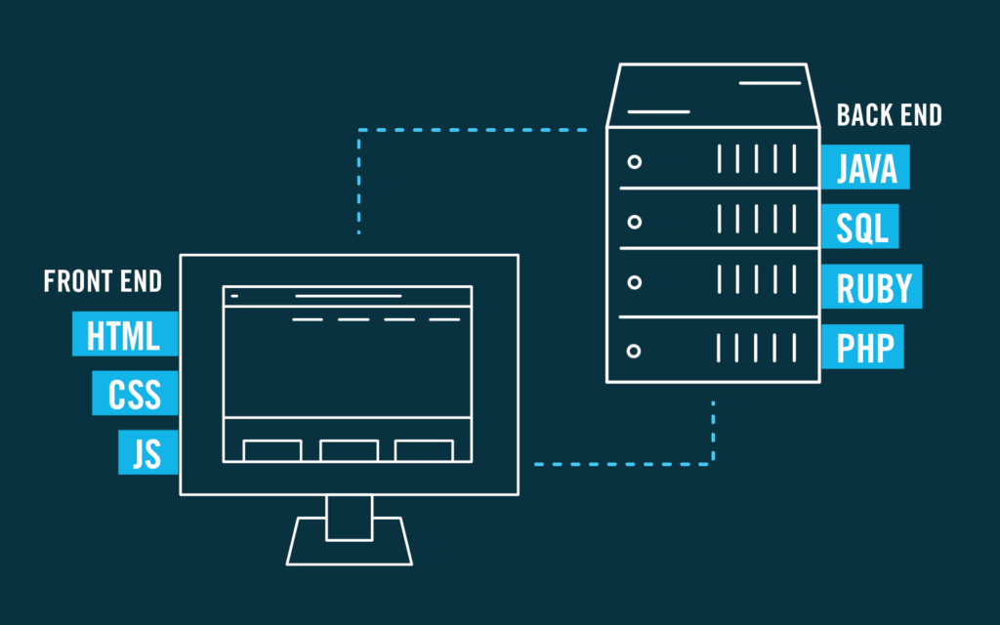

Lo sviluppatore Front End è
colui che realizza la parte visibile del sito, l’interfaccia attraverso la quale l'utente può interagire
Lo sviluppatore Back End
si occupa del dietro le quinte del sito, invisibile all'utente. Ad esempio può essere intesa la capacità di
comunicare con il server per restituire i risultati richiesti dagli utenti tramite l’interazione con la grafica.
Per ulteriori informazioni clicca qui
